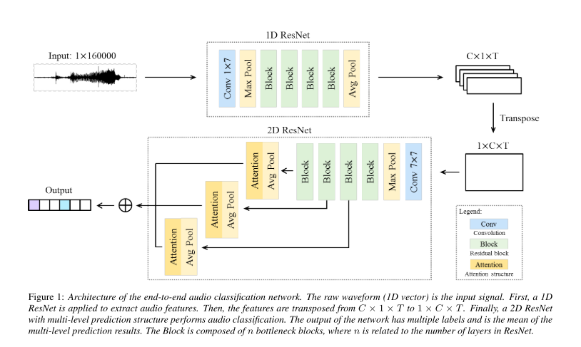
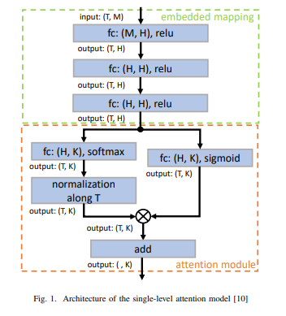
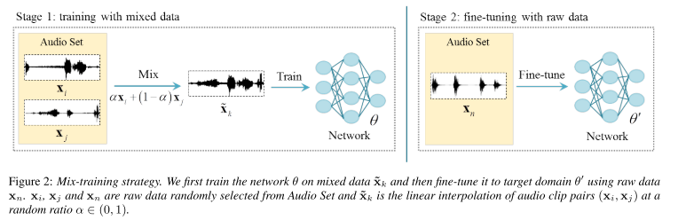
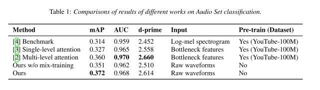
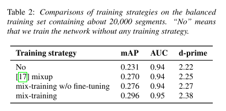

1. どんなもの？
- 音の生波形から，eventのclassificationを行う
- raw waveformを1D CNNで周波数解析し，得られたTransformed Imageを2D CNNで識別
- training dataが少ない場合でも有効なMix-trainingを提案
2. 先行研究と比べてどこがすごい？
- Audio ClassificationはGoogleのBottleneck featureを使った識別，Handcrafted featureを使った識別がBaselineだった
- Bottleneckは情報のlostが，Handcraftedは抽出の困難さが問題
- end-to-endな周波数特徴の抽出，識別を可能に
3. 技術や手法の"キモ"はどこ？
- キモは，周波数特徴を抽出する1D CNNとその特徴を識別する2D CNN
Raw-waveforms-based network

1D CNN
- 1D CNNで時間方向にdownsamplingをかけることで，周波数特徴を抽出
- FFTをNNに任せてるイメージで，識別に適した周波数特徴を抽出してくれることを期待
- 最終的には，$C \times 1 \times T$ (channel, 1, time)のfeature mapをtransposeして，$1 \times C \times T$ (1, channel, time)の画像に
2D CNN
- 得られた周波数特徴画像を2D Convolution
- 勾配消失を防ぐため，multi-resolutionalなfeature mapからpredictionを出力
- attentionつき（attentionは多分，以下の構造）

- Avg Poolは多分GAP．．．？
Mix-training strategy

- training dataが少ない場合に有効なMix-training．pretraining的な扱い
- 2つの入力を$\alpha \in (0, 1)$でblend
$$ \tilde{x}_k = \alpha x_i + (1-\alpha) x_j $$
- $\tilde{x}_k$に対応する教師ラベルは以下（$y_i$,$y_j$はmulti-hot label)
$$ \tilde{y}_k = sign(y_i + y_j) $$
- loss関数は
$$ L=-\frac{1}{K} \sum_{k, n} \left(1-\tilde{y}_{k n}\right) \log \left(1-t_{k n}\right)+\tilde{y}_{k n} \log t_{k n} $$
$$ \mathbf{t_k} = f_\theta (\tilde{x}_k) = [ t_{k1}, t_{k2}, …, t_{kN} ] $$
- Mix-trainingが終わった後にはmixしないデータでfine-tuning
4. どうやって有効だと検証した？
- Audio SetでBaselineとの精度比較
- 精度的には負けてるが，pretrainingなしなのはgoodかも

- mix-trainingの有効性確認も
- mix-upよりも高精度

5. 議論はあるか？
- 周波数特徴画像にFFTのような説明性はあるか？
- mix-trainingの教師データの総和が1にならないが良いのか．．．
- stemのConv 1x7は妥当か？
6. 次に読むべき論文はある？
- Yu, C., Barsim, K. S., Kong, Q., & Yang, B. (2018). Multi-level Attention Model for Weakly Supervised Audio Classification. Retrieved from http://arxiv.org/abs/1803.02353
- Zhang, H., Cisse, M., Dauphin, Y. N., & Lopez-Paz, D. (2017). mixup: Beyond Empirical Risk Minimization. Retrieved from https://arxiv.org/abs/1710.09412